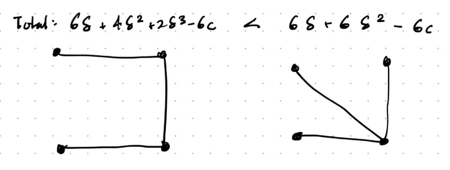
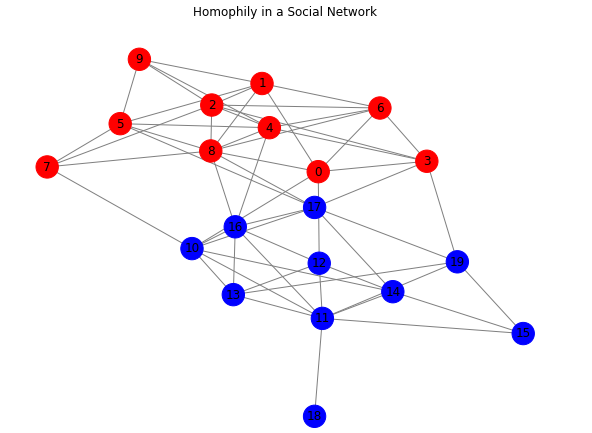
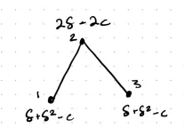

Chapter 1. Intro and Motivation for Networks
Example 1: Florentine Marriages
Suppose there is an edge between family \(i\) and \(j\) if there is a marriage between their respective families. Let \(P(i,j)\) be the number of shortest paths from family \(i\) to family \(j\). Let \(P_k(i,j)\) be the number of these that family \(k \neq i,j\) lies on. Then we can develop a “betweenness” measure of a family by:
\[
\text{Betweenness}(k) := \sum_{i,j : i \neq j, k \notin \{i,j\}} \frac{P_k(i,j)/P(i,j)}{{n-1}\choose{2}}
\]
where \({n-1}\choose{2}\) is the total number of pairs of families in the graph.
We see that \(\text{Betweenness(Medici)} = 0.522\) in the figure, so they lie on over half of the shortest paths between any two other families. This could be an explanation for why they rose to power, as marriages were key to communication, trade deals, and political decisions.
Example 2: High school Friendships
This following network depicts students organized by race/ethnicity. There are about 52% whites, yet 86% of whites’ friendships are with other whites, and similar for the 38% of blacks, with 85% of friendships being with other blacks.
This is a phenomenon known as homophily, and leads to students being somewhat segregated by race, impacting the diffusion of information, learning, and the speed at which information/disease/etc. may be spread through the network.
Example 3. Erdos-Renyi Random Networks
Key model:
- Fix a set of \(n\) nodes.
- An edge between any two nodes, \(i,j\) is given by a probability \(p\), and independent across links.
Ex. Given \(n=3\), a complete \(K_3\) graph forms with probability \(p^3\) (3 edges must form), one with two links \(3(p^2)(1-p)\), etc. (binomial distribution).
The degree distribution of an ER network describes the prob. any given node will have a degree of \(d\). The probability that any node will have \(d\) links is:
\[
{{n-1}\choose{d}}p^d(1-p)^{n-1-d}
\]
However, there is still some correlation between node degrees, but as \(n\) becomes large, the correlation of degree between any two nodes vanishes to \(0\), and the degree distribution will approach that above.
We can approximate (for large \(n\), small \(p\)) the binomial expression with Poisson distribution, i.e. \[
\frac{e^{-(n-1)p}((n-1)p)^d}{d!}
\] and given this approximation, random graphs with independently formed links with identical probabilities are called Poisson random networks.
Ex. \(n=50, p=0.02\) which gives approx expected degree of a node to be \(1\).
Increasing \(p = 0.078 = \log(50)/50\), we expect that only \(2%\) of the nodes will have degree of 0 (i.e. isolated). Indeed, we see 1/50 of the nodes in this one are isolated; so the rest are in some connected component (which happens to be 1 component).
Using the Poisson approximation, we can see when \(d=0\), the probability of a node having \(0\) links is \(e^{-(n-1)p}\) (for large \(n\)). Thus, if we want to expect just 1 node to be isolated, we can set:
\[
e^{-(n-1)p} = 1/n
\] and solving for the average degree, \((n-1)p\) yields: \[
(n-1)p = \log(n)
\]
Thus, if the average degree is substantially above \(\log(n)\), \(\mathbb{P}(\text{there is an isolated node}) \rightarrow_{n\rightarrow\infty} 0\), and vice versa, the probability goes to 1. This is also known as the threshold for a phase transition.
Example 4: Symmetric Connections Model (Game-Theory)
Now, we incorporate game-theory, and consider when links are actively chosen by agents in the model (i.e. with the Florentine marriages).
For example:
- Links could be friendships between players, which offer benefits like favors, information, etc.
- Indirect links (paths) from \(i\) to \(j\) could offer some (lesser) indirect benefits, so it deteriorates with the “distance” of a friendship.
We formalize with a “reward” parameter \(\delta \in [0,1]\), and let the benefit gained for a connection with \(i,j\) to be \(\delta^{l_{ij}}\), where \(l_{ij}\) is the “distance” (number of links in shortest path) between them.
We include a fixed cost \(c > 0\) for a “maintaining” a direct friendship, i.e. the total cost for \(i\) would be \(c\cdot d_i\) where \(d_i\) is the number of neighbors (degree) that \(i\) has.
Thus, we can classify player \(i\)’s utility in network \(g\) by: \[
u_i(g) = \sum_{j\neq i: i,j \text{path connected}} \delta^{l_{ij}(g)}-d_i(g)\cdot c
\]
Now, we can start asking questions like:
- What model \(g^*(\delta, c)\) is best for overall maximizing society utility, i.e. \(g^* = \text{argmax}_g \sum_i u_i(g)\)?
- What networks might form (under \(\delta, c\)) when players are self-interested?
For (1), we see if \(c < \delta - \delta^2\) (already getting at most \(\delta^2\) if any existing indirect connection, then the new utility \(\delta-c\) should be larger), then adding a link between any two agents will always increase welfare, and thus, the ideal graph is complete.
When \(c > \delta - \delta^2\), most optimal for society to have 1 player with \(n-1\) links, and all other players linked to her (“star formation”). (Intuition, ensures all pairs are path-connected, and each within 2 links, while minimizing costs). Note adding another link between any two players would be suboptimal then (see previous).

We kind of fall into 3 equilibriums: a complete graph if costs are low, a star if costs high, and empty graph if costs astronomically high.
Now for (2), we introduce an equilibrium concept called pairwise stability, which requires that:
- No agent would raise their payoff by deleting some link (deletion only requires will of one individual)
- No two agents would both benefit by adding a link between them (i.e. formation requires the consent of both individuals)
Case 1: \(c < \delta - \delta^2\) - unique PS equilibrium is complete graph. Always benefit by adding a link.
Case 2: \(c > \delta - \delta^2\), \(\delta > c\), i.e. star network. Note, the star is both pairwise stable and society-efficient. The peripherals don’t want to delete their links, center wouldn’t either as \(\delta > c\). No formation of a link benefits both players by condition 1.
- However, pairwise stability is not unique. Others exist, but they don’t maximize society benefit as well.
Case 3: \(\delta > c\), then star cannot form. Any player with just one link benefits by deleting it, so any PS network that has players with links must have at least 2.
Thus,
- Individual incentives not always aligned with societal whole
- How can we predict which networks will form?
Exercises
1.1: A Weighted-Betweenness Measure
Let \(\ell_{ij}\) be the length of the shortest path between nodes \(i\) and \(j\) and let \(W_k(ij) = P_k(ij)/(\ell_{ij} - 1)\), (setting \(\ell_{ij} = \infty\) and \(W_k(ij) = 0\) if \(i\) and \(j\) are not connected). Then the weighted betweenness measure for a given node \(k\) be defined by
\[
WB_k = \sum_{i \ne j; i,j \ne k; \ell_{ij} < \infty} \frac{W_k(ij)/P(ij)}{(n-1)(n-2)/2},
\]
where we take the convention that \(\frac{W_k(ij)}{P(ij)} = 0/0 = 0\) if there are no paths connecting \(i\) and \(j\).
Show that:
- \(WB_k > 0\) if and only if \(k\) has more than one link in a network and some of \(k\)’s neighbors are not linked to each other.
(\(\implies\)) Assume \(WB_k >0\), so \(\exists i,j \neq k\) s.t. \(W_k(ij) > 0\), so \(P_k(ij) > 0\), so namely, \(k\) is on some shortest path from \(i\) to \(j\). In particular, \(\delta(k) \geq 2\), and consider a shortest path \(k\) lies on, \(p = (i, \cdots, k^1, k, k^2, \cdots, j)\). If \(\exists (k^1, k^2) \in E\), this contradicts \(p\) being a shortest path from \(i\) to \(j\).
(\(\impliedby\)) Assume \(\delta(k) \geq 2\). Pick \(2\) such neighbors with no link between them, call them \(i,j\), and consider the shortest paths from \(i\) to \(j\). Clearly, \((i, k, j)\) must is a shortest path, so \(k\) lies on some shortest path for \(i,j \neq k\), and so tracing back through definitions, \(WB_k > 0. \square\)
\(WB_k = 1\) for the center node in a star network that includes all nodes (with \(n \ge 3\)).
\(WB_k < 1\) unless \(k\) is the center node in a star network that contains all nodes.
Calculate this measure for the the network pictured in Figure 1.3 for nodes 5 and 6.
Contrast this measure with the betweenness measure in (1.1).
1.3 The Upper Bound for a Star to be Efficient
Find the maximum level of cost in terms of \(\delta\) and \(n\), for which a star is an efficient network in the symmetric connections model.
1.5 Homophily and Balance Across Groups
Consider a society of two groups, where the set \(N_1\) comprises the members of group 1 and the set \(N_2\) comprises the members of group 2, with cardinalities \(n_1\) and \(n_2\), respectively. Suppose that \(n_1 > n_2\). For an individual \(i\), let \(d_i\) be \(i\)’s degree (total number of friends) and let \(s_i\) denote the number of friends that \(i\) has that are within own group. Let \(h_k\) denote a simple homophily index for group \(k\), defined by
\[
h_k = \frac{\sum_{i \in N_k} s_i}{\sum_{i \in N_k} d_i}.
\]
Show that if \(h_1\) and \(h_2\) are both above 0 and below 1, and the average degree in group 1 is at least as high as the average degree in group 2, then \(h_1 > h_2\). What are \(h_1\) and \(h_2\) in the case where friendships are formed in percentages that correspond to the relevant populations?
“Social and Economic Networks”, Matthew O. Jackson
Chapter 1. Intro and Motivation for Networks
Example 1: Florentine Marriages
Suppose there is an edge between family \(i\) and \(j\) if there is a marriage between their respective families. Let \(P(i,j)\) be the number of shortest paths from family \(i\) to family \(j\). Let \(P_k(i,j)\) be the number of these that family \(k \neq i,j\) lies on. Then we can develop a “betweenness” measure of a family by:
\[ \text{Betweenness}(k) := \sum_{i,j : i \neq j, k \notin \{i,j\}} \frac{P_k(i,j)/P(i,j)}{{n-1}\choose{2}} \]
where \({n-1}\choose{2}\) is the total number of pairs of families in the graph.
We see that \(\text{Betweenness(Medici)} = 0.522\) in the figure, so they lie on over half of the shortest paths between any two other families. This could be an explanation for why they rose to power, as marriages were key to communication, trade deals, and political decisions.
Example 2: High school Friendships
This following network depicts students organized by race/ethnicity. There are about 52% whites, yet 86% of whites’ friendships are with other whites, and similar for the 38% of blacks, with 85% of friendships being with other blacks.
This is a phenomenon known as homophily, and leads to students being somewhat segregated by race, impacting the diffusion of information, learning, and the speed at which information/disease/etc. may be spread through the network.

Example 3. Erdos-Renyi Random Networks
Key model:
Ex. Given \(n=3\), a complete \(K_3\) graph forms with probability \(p^3\) (3 edges must form), one with two links \(3(p^2)(1-p)\), etc. (binomial distribution).
The degree distribution of an ER network describes the prob. any given node will have a degree of \(d\). The probability that any node will have \(d\) links is:
\[ {{n-1}\choose{d}}p^d(1-p)^{n-1-d} \]
However, there is still some correlation between node degrees, but as \(n\) becomes large, the correlation of degree between any two nodes vanishes to \(0\), and the degree distribution will approach that above.
We can approximate (for large \(n\), small \(p\)) the binomial expression with Poisson distribution, i.e. \[ \frac{e^{-(n-1)p}((n-1)p)^d}{d!} \] and given this approximation, random graphs with independently formed links with identical probabilities are called Poisson random networks.
Ex. \(n=50, p=0.02\) which gives approx expected degree of a node to be \(1\).
Increasing \(p = 0.078 = \log(50)/50\), we expect that only \(2%\) of the nodes will have degree of 0 (i.e. isolated). Indeed, we see 1/50 of the nodes in this one are isolated; so the rest are in some connected component (which happens to be 1 component).
Using the Poisson approximation, we can see when \(d=0\), the probability of a node having \(0\) links is \(e^{-(n-1)p}\) (for large \(n\)). Thus, if we want to expect just 1 node to be isolated, we can set:
\[ e^{-(n-1)p} = 1/n \] and solving for the average degree, \((n-1)p\) yields: \[ (n-1)p = \log(n) \]
Thus, if the average degree is substantially above \(\log(n)\), \(\mathbb{P}(\text{there is an isolated node}) \rightarrow_{n\rightarrow\infty} 0\), and vice versa, the probability goes to 1. This is also known as the threshold for a phase transition.
Example 4: Symmetric Connections Model (Game-Theory)
Now, we incorporate game-theory, and consider when links are actively chosen by agents in the model (i.e. with the Florentine marriages).
For example:
We formalize with a “reward” parameter \(\delta \in [0,1]\), and let the benefit gained for a connection with \(i,j\) to be \(\delta^{l_{ij}}\), where \(l_{ij}\) is the “distance” (number of links in shortest path) between them.
We include a fixed cost \(c > 0\) for a “maintaining” a direct friendship, i.e. the total cost for \(i\) would be \(c\cdot d_i\) where \(d_i\) is the number of neighbors (degree) that \(i\) has.
Thus, we can classify player \(i\)’s utility in network \(g\) by: \[ u_i(g) = \sum_{j\neq i: i,j \text{path connected}} \delta^{l_{ij}(g)}-d_i(g)\cdot c \]

Now, we can start asking questions like:
For (1), we see if \(c < \delta - \delta^2\) (already getting at most \(\delta^2\) if any existing indirect connection, then the new utility \(\delta-c\) should be larger), then adding a link between any two agents will always increase welfare, and thus, the ideal graph is complete.
When \(c > \delta - \delta^2\), most optimal for society to have 1 player with \(n-1\) links, and all other players linked to her (“star formation”). (Intuition, ensures all pairs are path-connected, and each within 2 links, while minimizing costs). Note adding another link between any two players would be suboptimal then (see previous).

We kind of fall into 3 equilibriums: a complete graph if costs are low, a star if costs high, and empty graph if costs astronomically high.
Now for (2), we introduce an equilibrium concept called pairwise stability, which requires that:
Case 1: \(c < \delta - \delta^2\) - unique PS equilibrium is complete graph. Always benefit by adding a link.
Case 2: \(c > \delta - \delta^2\), \(\delta > c\), i.e. star network. Note, the star is both pairwise stable and society-efficient. The peripherals don’t want to delete their links, center wouldn’t either as \(\delta > c\). No formation of a link benefits both players by condition 1.
Case 3: \(\delta > c\), then star cannot form. Any player with just one link benefits by deleting it, so any PS network that has players with links must have at least 2.
Thus,
Exercises
1.1: A Weighted-Betweenness Measure
Let \(\ell_{ij}\) be the length of the shortest path between nodes \(i\) and \(j\) and let \(W_k(ij) = P_k(ij)/(\ell_{ij} - 1)\), (setting \(\ell_{ij} = \infty\) and \(W_k(ij) = 0\) if \(i\) and \(j\) are not connected). Then the weighted betweenness measure for a given node \(k\) be defined by
\[ WB_k = \sum_{i \ne j; i,j \ne k; \ell_{ij} < \infty} \frac{W_k(ij)/P(ij)}{(n-1)(n-2)/2}, \]
where we take the convention that \(\frac{W_k(ij)}{P(ij)} = 0/0 = 0\) if there are no paths connecting \(i\) and \(j\).
Show that:
(\(\implies\)) Assume \(WB_k >0\), so \(\exists i,j \neq k\) s.t. \(W_k(ij) > 0\), so \(P_k(ij) > 0\), so namely, \(k\) is on some shortest path from \(i\) to \(j\). In particular, \(\delta(k) \geq 2\), and consider a shortest path \(k\) lies on, \(p = (i, \cdots, k^1, k, k^2, \cdots, j)\). If \(\exists (k^1, k^2) \in E\), this contradicts \(p\) being a shortest path from \(i\) to \(j\).
(\(\impliedby\)) Assume \(\delta(k) \geq 2\). Pick \(2\) such neighbors with no link between them, call them \(i,j\), and consider the shortest paths from \(i\) to \(j\). Clearly, \((i, k, j)\) must is a shortest path, so \(k\) lies on some shortest path for \(i,j \neq k\), and so tracing back through definitions, \(WB_k > 0. \square\)
\(WB_k = 1\) for the center node in a star network that includes all nodes (with \(n \ge 3\)).
\(WB_k < 1\) unless \(k\) is the center node in a star network that contains all nodes.
Calculate this measure for the the network pictured in Figure 1.3 for nodes 5 and 6.
Contrast this measure with the betweenness measure in (1.1).
1.3 The Upper Bound for a Star to be Efficient
Find the maximum level of cost in terms of \(\delta\) and \(n\), for which a star is an efficient network in the symmetric connections model.
1.5 Homophily and Balance Across Groups
Consider a society of two groups, where the set \(N_1\) comprises the members of group 1 and the set \(N_2\) comprises the members of group 2, with cardinalities \(n_1\) and \(n_2\), respectively. Suppose that \(n_1 > n_2\). For an individual \(i\), let \(d_i\) be \(i\)’s degree (total number of friends) and let \(s_i\) denote the number of friends that \(i\) has that are within own group. Let \(h_k\) denote a simple homophily index for group \(k\), defined by
\[ h_k = \frac{\sum_{i \in N_k} s_i}{\sum_{i \in N_k} d_i}. \]
Show that if \(h_1\) and \(h_2\) are both above 0 and below 1, and the average degree in group 1 is at least as high as the average degree in group 2, then \(h_1 > h_2\). What are \(h_1\) and \(h_2\) in the case where friendships are formed in percentages that correspond to the relevant populations?
Ch. 2: Representing and Measuring Networks